Polished draft keyframes
All stills come from the encoded 960 x 540 continuous draft. The original storyboard is preserved.
01-product / frame 20 / 0.67 s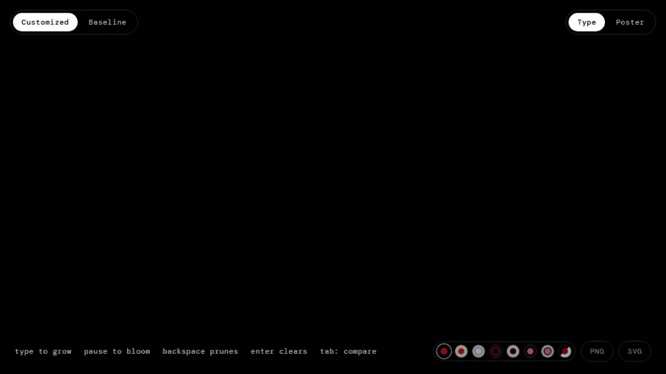
02-living-words / frame 176 / 5.87 s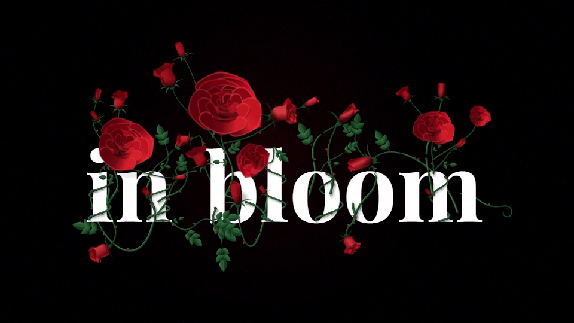
03-rose / frame 272 / 9.07 s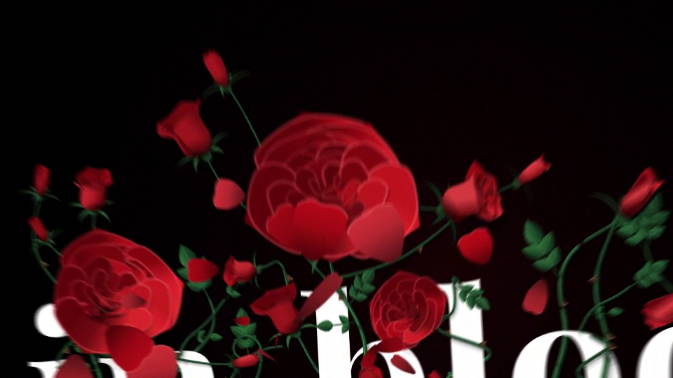
04-contact / frame 345 / 11.50 s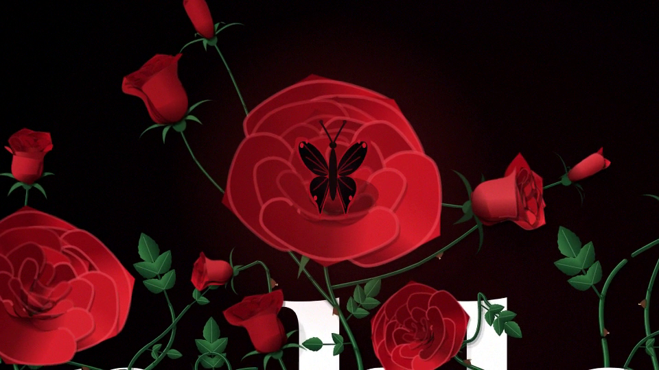
05-blood-consequence / frame 434 / 14.47 s06-first-world / frame 535 / 17.83 s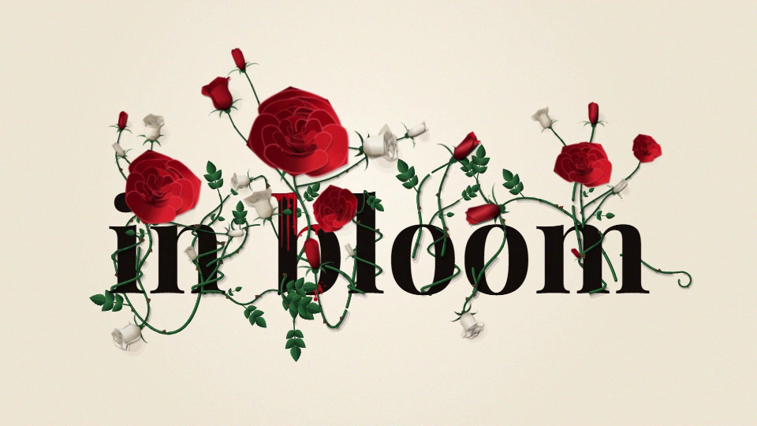
07-fifth-look / frame 680 / 22.67 s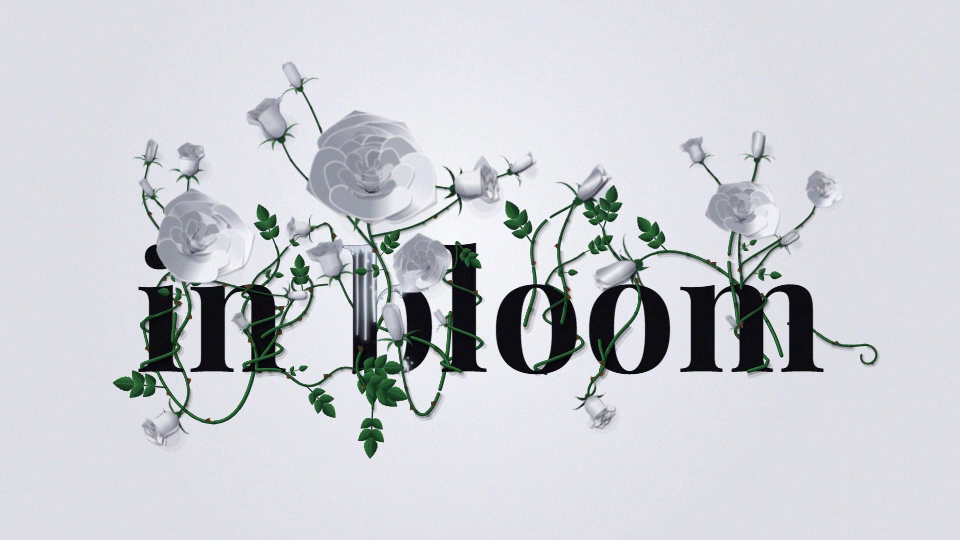
08-cormorant / frame 730 / 24.33 s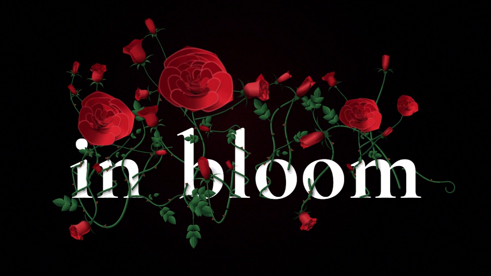
09-custom-world / frame 845 / 28.17 s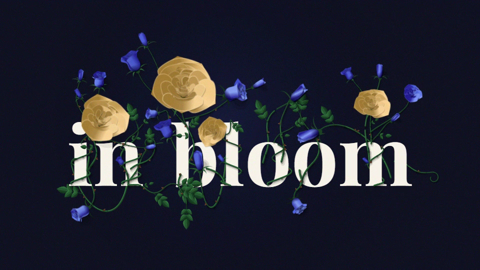
10-recovered-phrase / frame 979 / 32.63 s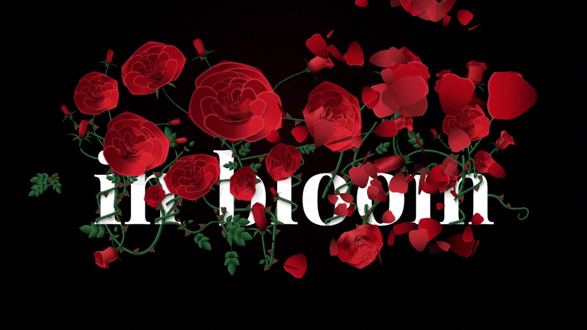
11-passing-petal / frame 994 / 33.13 s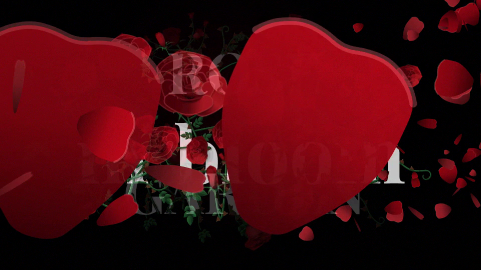
12-final-identity / frame 1130 / 37.67 s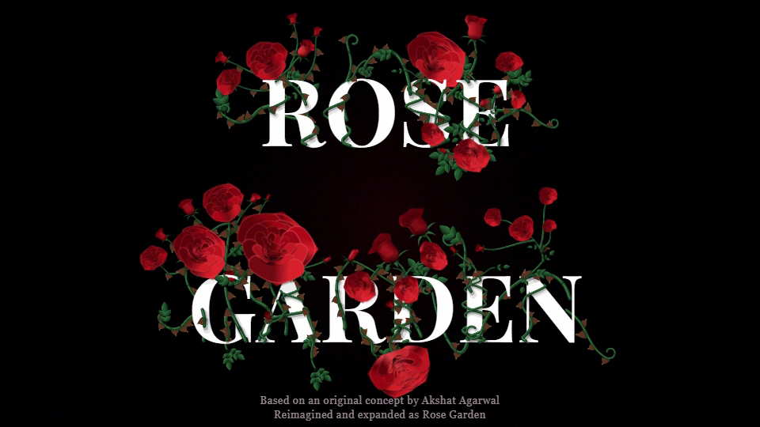